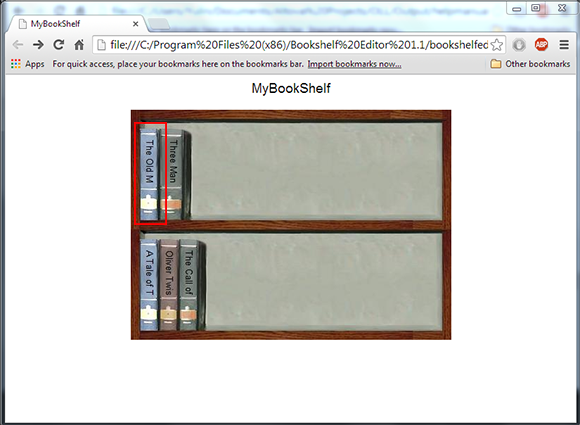
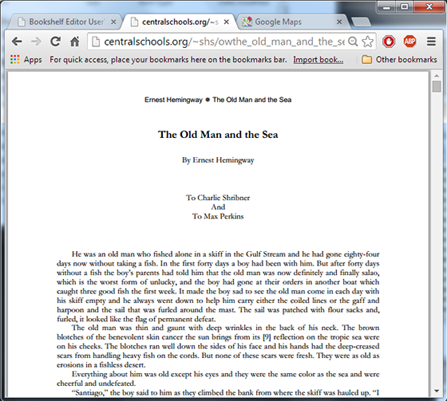

> Opening and Using your Bookshelf >
Accessing book contents
9.2. Accessing book contents
To access book contents:
- Move the cursor over the book you want to read.
The cursor changes to when it passes over a book that has a hyperlink.
- Click on the selected book. 
The book content is displayed in the browser.
